Videók
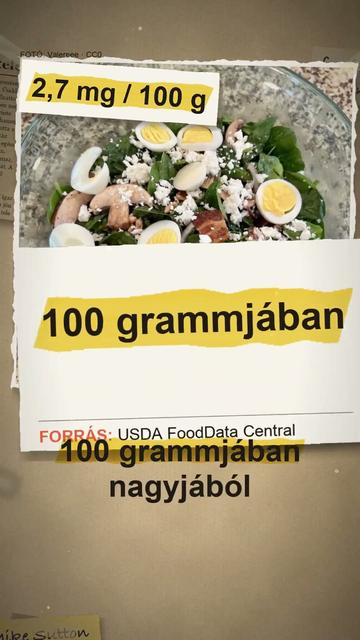
Tényleg tele van vassal a spenót?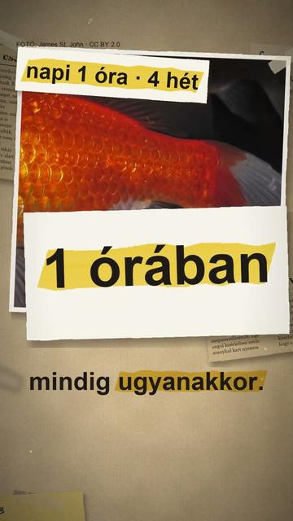
Tényleg csak 3 másodperces az aranyhal memóriája? 3 dolog, amit nem tudtál a Tokaido-sinkanszenről
3 dolog, amit nem tudtál a Tokaido-sinkanszenről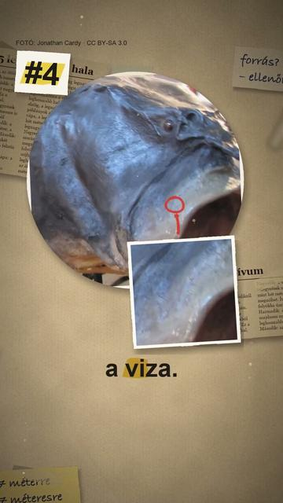
A világ 5 leghosszabb hala Tényleg Kocs faluról kapta nevét a kocsi?
Tényleg Kocs faluról kapta nevét a kocsi?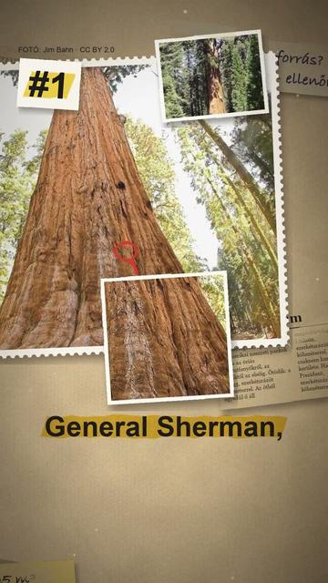
A világ 5 legnagyobb mamutfenyője Az 5 legnagyobb ország a világon
Az 5 legnagyobb ország a világon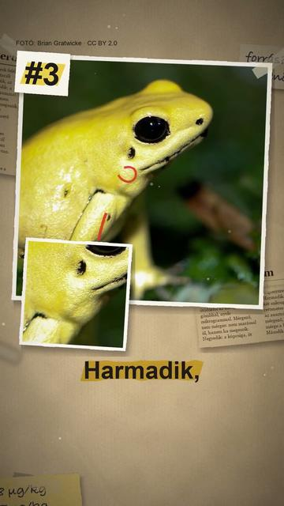
Az 5 legerősebb mérgű állat a világon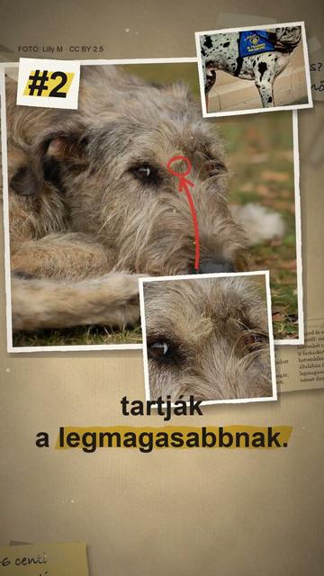
A világ 5 legnagyobb kutyafajtája Mi hangzott el valójában az őszödi beszédben?
Mi hangzott el valójában az őszödi beszédben? Novák Katalin lemondása: mit mutatnak az iratok?
Novák Katalin lemondása: mit mutatnak az iratok?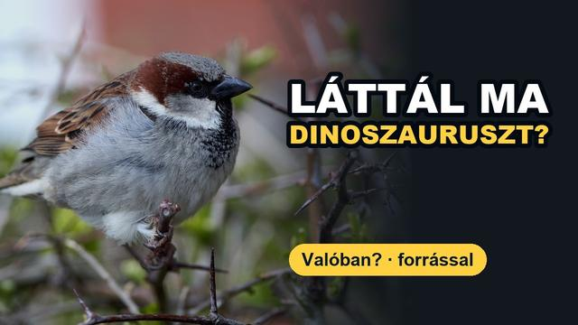
Valóban kihaltak a dinoszauruszok? És hány szíve van a polipnak?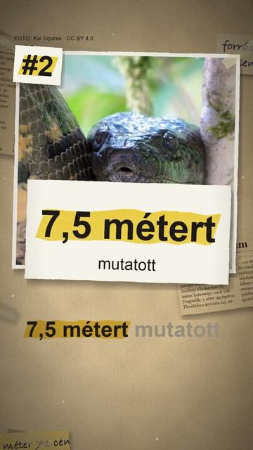
Az 5 legnagyobb kígyó a világon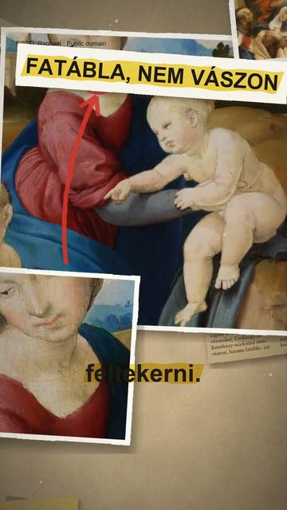
Feltekerve lopták el az Esterházy-madonnát? 3 dolog, amit nem tudtál a Balatonról
3 dolog, amit nem tudtál a Balatonról 3 dolog, amit nem tudtál a Rubik-kockáról
3 dolog, amit nem tudtál a Rubik-kockáról Tényleg a magyar a világ egyik legnehezebb nyelve?
Tényleg a magyar a világ egyik legnehezebb nyelve? A világ 5 legnagyobb pókja
A világ 5 legnagyobb pókja Az 5 legkisebb ország a világon
Az 5 legkisebb ország a világon Tényleg magyar növény a paprika?
Tényleg magyar növény a paprika? Egy magyar orvos látta el a Titanic túlélőit?
Egy magyar orvos látta el a Titanic túlélőit? Budapestnek köze van a Halloweenhez?
Budapestnek köze van a Halloweenhez?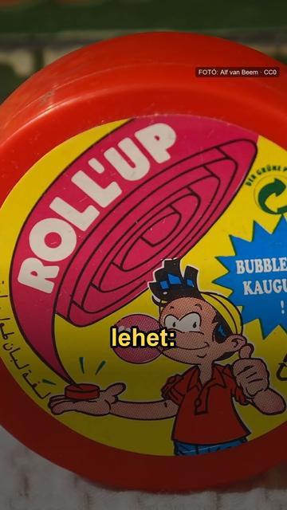
7 évig a gyomrunkban marad a lenyelt rágó?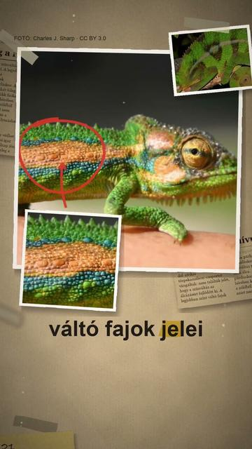
Tényleg a rejtőzködéshez vált színt a kaméleon?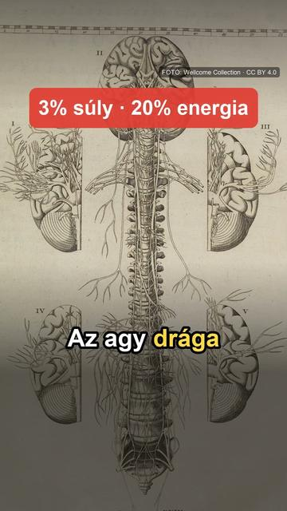
Csak az agyunk 10 százalékát használjuk? A Naprendszer 5 legnagyobb holdja
A Naprendszer 5 legnagyobb holdja Látszik a Kínai Nagy Fal az űrből?
Látszik a Kínai Nagy Fal az űrből?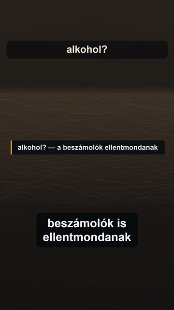
Kiss Béla legendája: hány hordót találtak valójában Cinkotán?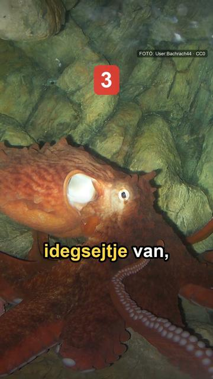
3 dolog, amit nem tudtál a polipokról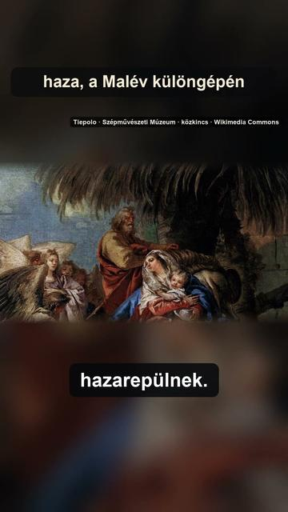
Zöld bőrönd egy görög kolostorkertben: benne hat a hét ellopott festményből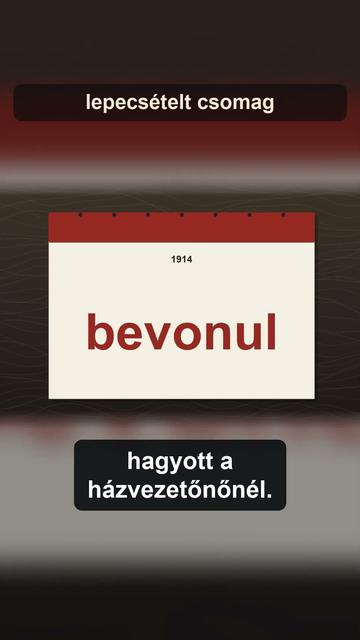
Kiss Béla, Cinkota 1916: a hordók, és a gyilkos, akit sosem kaptak el Kiss Béla, Cinkota 1916: a hordók, és a gyilkos, akit sosem kaptak el
Kiss Béla, Cinkota 1916: a hordók, és a gyilkos, akit sosem kaptak el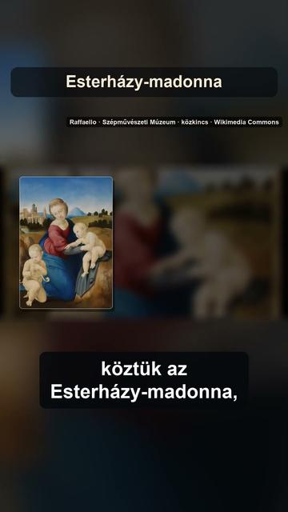
Hét festmény, egy éjszaka: ki rabolta ki a Szépművészetit 1983-ban? Hét festmény, egy éjszaka: ki rabolta ki a Szépművészetit 1983-ban?
Hét festmény, egy éjszaka: ki rabolta ki a Szépművészetit 1983-ban? Miért őrizte Amerika 32 évig a magyar Szent Koronát?
Miért őrizte Amerika 32 évig a magyar Szent Koronát? Miért őrizte Amerika 32 évig a magyar Szent Koronát?
Miért őrizte Amerika 32 évig a magyar Szent Koronát? Magyarország, 1946: mennyit ért a fizetésed, mire hazaértél vele?
Magyarország, 1946: mennyit ért a fizetésed, mire hazaértél vele? Magyarország, 1946: mennyit ért a fizetésed, mire hazaértél vele?
Magyarország, 1946: mennyit ért a fizetésed, mire hazaértél vele? Mi folyik Budapest alatt? Egy barlang, amit ma is csak búvárok járnak
Mi folyik Budapest alatt? Egy barlang, amit ma is csak búvárok járnak Mi folyik Budapest alatt? Egy barlang, amit ma is csak búvárok járnak
Mi folyik Budapest alatt? Egy barlang, amit ma is csak búvárok járnak